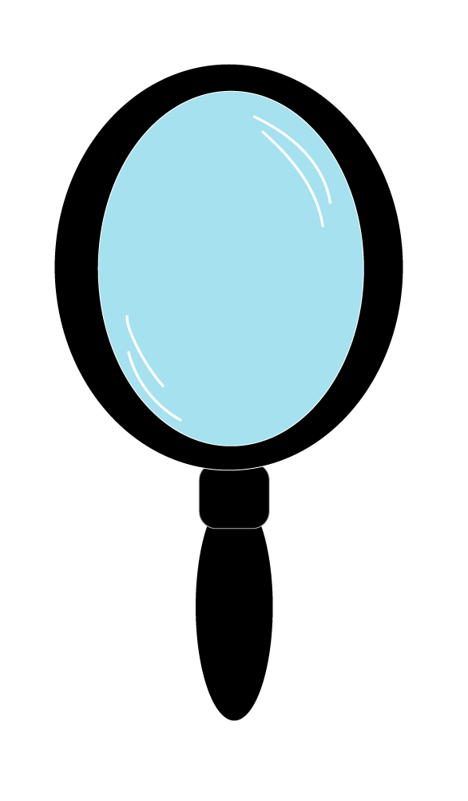

EYES AND SHINE
Eyeshadows are the perfect canvas to showcase the biggest color trends at the time. Whitney Houston flaunted the blue, pink and purple shadows on her eyes. Britney Spears was the face of glitter eyeshadow in the 1990's and Kim Kardashian reinvented nude eyeshadow in the late 2010's.
Click the canvas and start clicking through the eye palettes to view the difference in eyeshadow trends.
